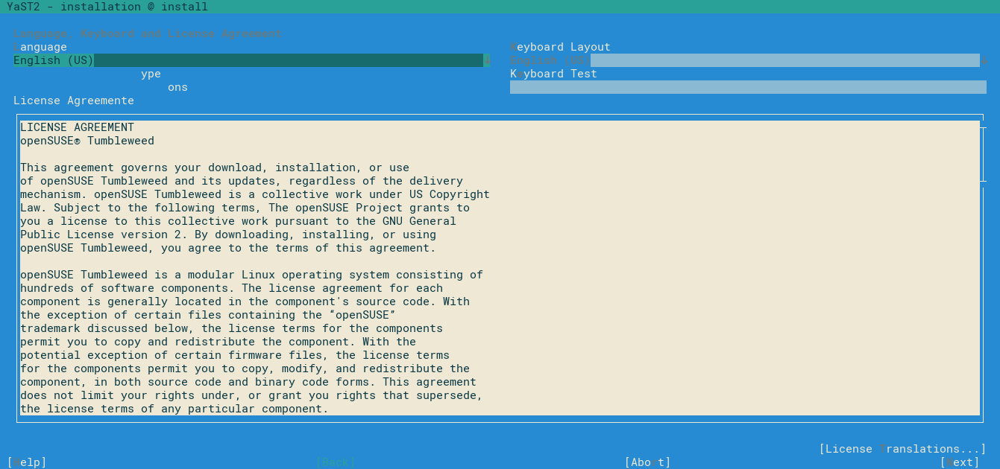
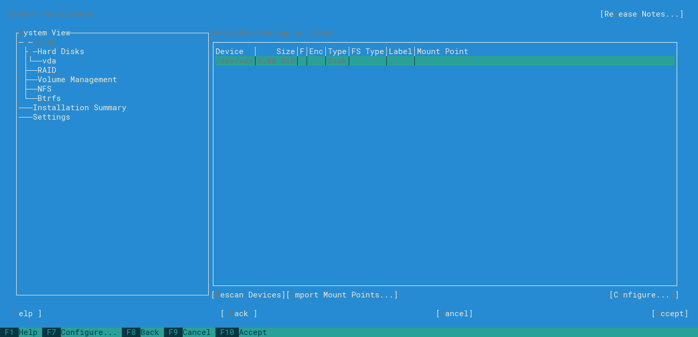
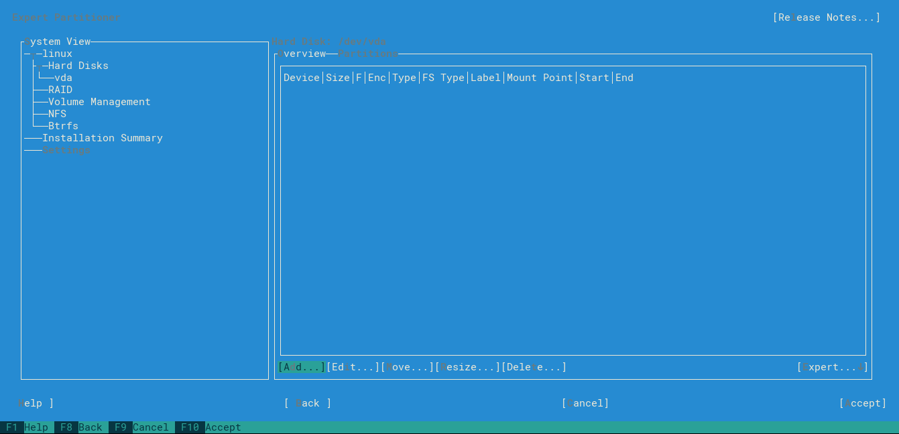
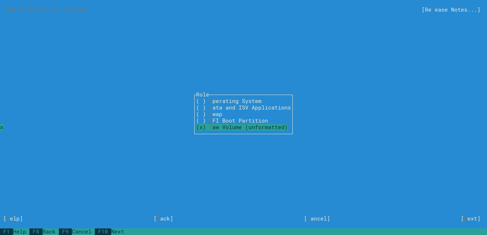
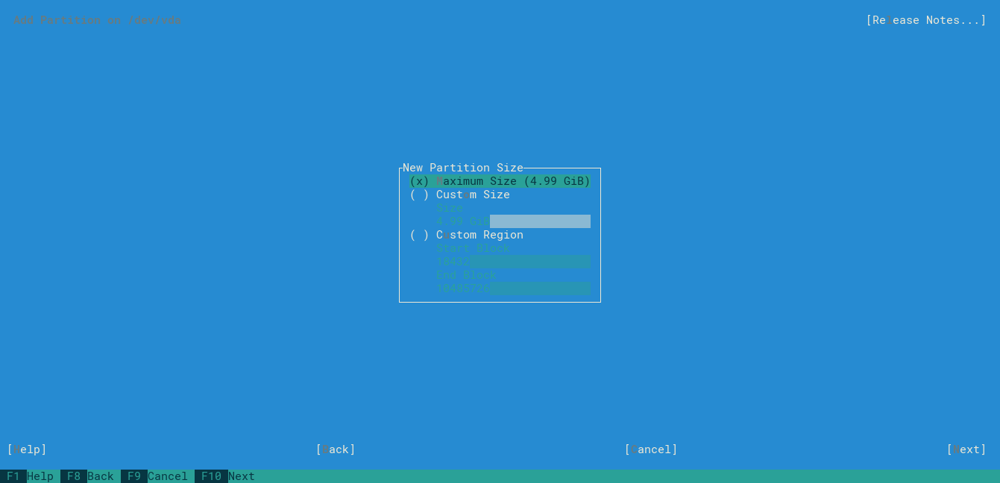
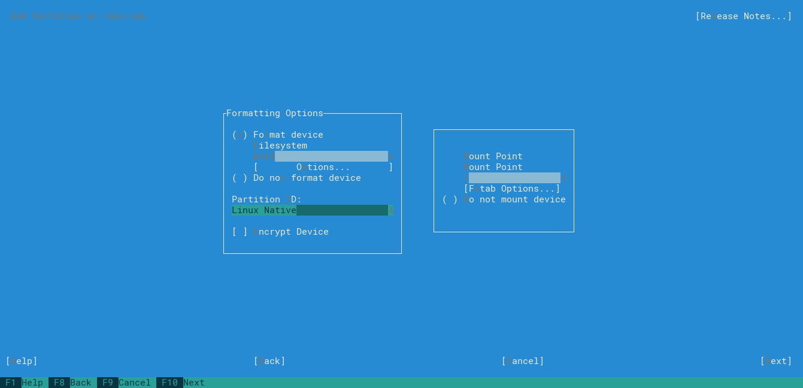
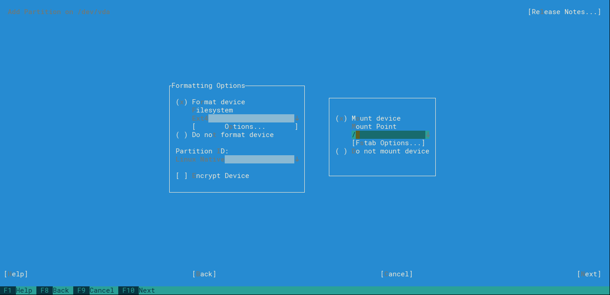
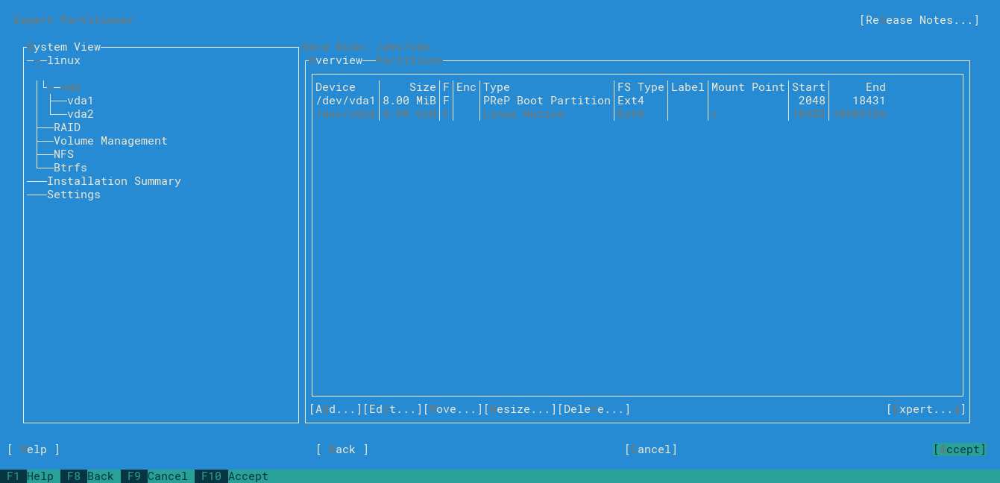
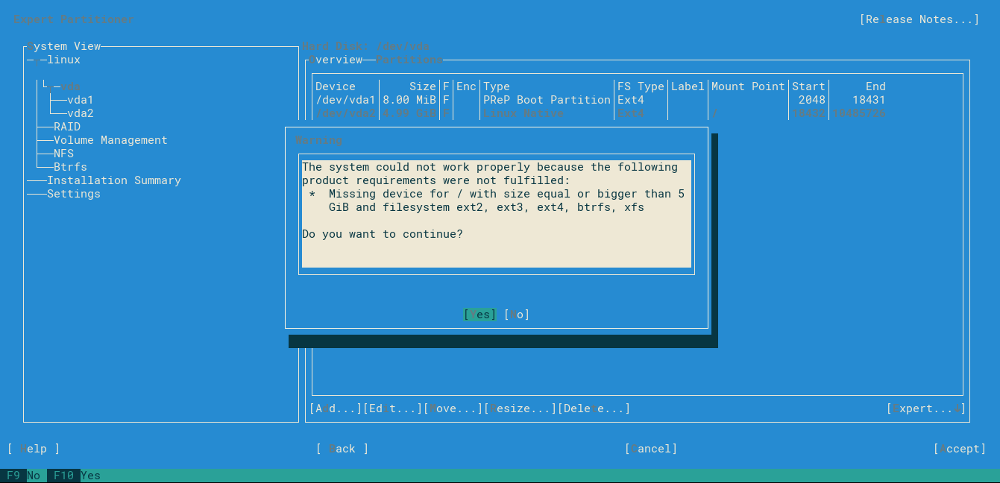
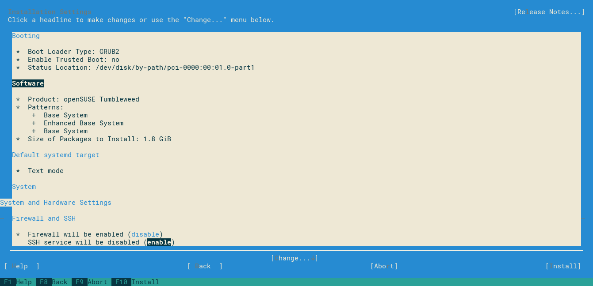

This tutorial I will show how create a openstack image (.qcow2) of opensuse from a ISO image using qemu. In this tutorial will be used opensuse Tumbleweed ppc64 le (because it’s the most challenging), but similiar process can be done for leap (15 and 42.3) and Tumbleweed ppc64be.
Preparing environment
First we need download opensuse image from repository (Tumbleweed, leap 15 and leap 42.3) and sha256 of respective image.
Execute sha256:
sha256sum openSUSE-Tumbleweed-DVD-ppc64le-Current.iso
Compare sha256sum output with sha256 downloaded:
715d9f89d90eb795b6a64ffe856aa5b7f3a64c7195a9ede8abea14a9d4f69e67
Install qemu using:
sudo apt update
sudo apt install qemu-kvm libvirt-clients libvirt-daemon-system -y
Now we need create a disk .qcow2 to install our O.S. with this command:
qemu-img create -f qcow2 openSUSE-Tumbleweed-ppc64le.qcow2 5G
Execute qemu to run the instaler:
sudo qemu-system-ppc64le -enable-kvm -m 1024 -cdrom openSUSE-Tumbleweed-DVD-ppc64le-Current.iso -drive file=openSUSE-Tumbleweed-ppc64le.qcow2,media=disk,if=virtio -nographic -smp cores=1,threads=1 -monitor pty -serial stdio -nodefaults -netdev user,id=enp0s1 -device virtio-net-pci,netdev=enp0s1 -boot order=d
Installing openSUSE
Select your language (using tab and arrows): 
Figure 1: Language selection screen
Select te most suitable bundle for your goal:

Figure 2: Bundle selector screen
Select expert partitioner:


Figure 3-4: Partioner selection screen
Select the hard drive that you want install opensuse: 
Figure 5: Drive selector screen
Add new partition selecting add button:

Figure 6: Partition screen
Set partition size to 8 MiB:

Figure 7: Partition size screen (Boot)
Select raw partition:

Figure 8: Partition role screen (Boot)
Select file system as Ext4 (or other filesystem of your preference):

Figure 9: File System type (Boot)
Select partition as PReP Boot Partition and next:

Figure 10: Partition type (Boot)
The boot partition was create and now we will create O.S. partition, select add and inside Patition size screen select Maximum Size:

Figure 11: Partition size screen (O.S)
Select Operating System option:

Figure 12: Partition role screen (O.S)
Select file system as Ext4 again (or other filesystem of your preference):

Figure 13: File System type (O.S)
Left selected Linux Native:

Figure 14: Partition type (O.S)
Left Mount device as / and select next:

Figure 15: Mount point
Partition configuration will look like this: 
Figure 16: Final partion configuration
We will receive warning message but we can ignore it and select yes:

Figure 17: Warning message
Next again:

Figure 18: Sumary partition screen
Select your clock and time zone:

Figure 19: Clock and time zone screen
Put you username and password:
Figure 20: Local user screen
Accept instalation and install: 
Figure 21: Summary screen

Figure 22: Instalation screen
Preparing image
Update all packages and install necessary ones (you can also uninstall unnecessary packages):
sudo zypper update
sudo zypper install cloud-init growpart yast2-network yast2-services-manager acpid
Remove hard-coded MAC address:
sudo cat /dev/null > /etc/udev/rules.d/70-persistent-net.rules
Enable ssh and cloud-init:
sudo systemctl enable cloud-init
sudo systemctl enable sshd
Disable firewall:
sudo systemctl stop firewalld
sudo systemctl disable firewalld
Inside /etc/default/grub file, set grub timeout to 0:
GRUB_TIMEOUT=0

Figure 23: Grub configuration
Update grub:
sudo exec grub2-mkconfig -o /boot/grub2/grub.cfg "$@"
Only for openSUSE Tumbleweed Le/Be
Opensuse Tumbleweed ppc64 Le/Be lacks some parameters on cloud-init.service, this causes instability on boot, which, sometimes, causes network connection errors. This problem was reported and hopefully will be solved when you read this tutorial.
Edit cloud-init.service file:
sudo vim /etc/systemd/system/cloud-init.target.wants/cloud-init.service
Add lines bellow after After=systemd-networkd-wait-online.service line:
Requires=wicked.service
After=wicked.service
After=dbus.service
Conflicts=shutdown.target

Figure 24: Configuration of cloud-init.service
Reload cloud-init service:
sudo systemctl restart cloud-init
sudo systemctl daemon-reload
Because Leap 42.3 ppc64Le’s configuration fits better for a cloud role, so we will replace cloud.cfg of Tumbleweed by Leap42.3’s cloud.cfg:
sudo vim /etc/cloud/cloud.cfg
Cleaning image
Now delete all remaining data:
cat /dev/null > ~/.bash_history && history -c && sudo su
cat /dev/null > /var/log/wtmp
cat /dev/null > /var/log/btmp
cat /dev/null > /var/log/lastlog
cat /dev/null > /var/run/utmp
cat /dev/null > /var/log/auth.log
cat /dev/null > /var/log/kern.log
cat /dev/null > ~/.bash_history && history -c && sudo poweroff
Adding to openstack
And finaly add image to openstack:
glance image-create --file openSUSE-Tumbleweed-ppc64le.qcow2 --container-format bare --disk-format qcow2 --property hw_video_model=vga --name "openSUSE Tumbleweed ppc64le"
If all the steps worked, you should see these messages at the next boot.